Обновление от 14.06.2025-------------------------------------------------------------------------
Серверная часть:
· На сервер добавлена функция оповещения об отключении Службы MongoDB. Также реализован перезапуск службы после ее отключения, с перезапуском событий ChangeStream для MongoDB. Теперь сервер оповещает о том, что службы БД отключена перезапускает и пере подключается к ней.
Клиентская часть:
· Проведена масштабная оптимизация всех компонентов (страниц): Uvolnenie, VPerevod, ZaprosSPrava, Stajirovka, Priem, Perevod, Naznachenie, Familia, ADTool (изменены обращения через api axios), Zapros, Svodka, Revizor, ChdTI, Aipsin, SbrosAD, PDoka, Access, Otdel, Users, FeedBack, Login, App, Sotrudniki, Main, Dashboard;
· В окне добавления прав ДоакНАСТД, теперь после его открытия можно просто начать вводить текст, и он автоматические будет вводиться в поле Сотрудника. Добавлена анимация;
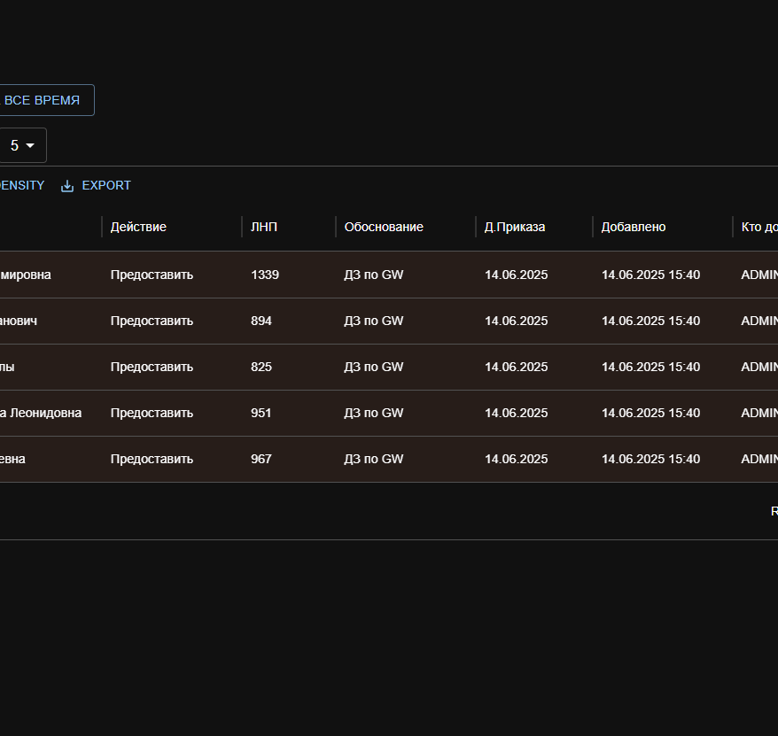
· Исправлена ошибка в Зарос Права Сотр. - в дате приказа постоянно отображалась текущая дата (хотя в БД была корректная);
· Переработаны элементы отображения списка прав Отделов, теперь там отображается последнее изменение прав, уменьшен шрифт для текса, и добавлена мульти-строковость текста;
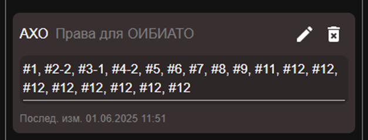
· Серьезно оптимизирована как сама страница Прав, так и компонент добавления/редактирования запросов;
· ADTool список данных отображается теперь отсортированный по последнему добавленному;
· Добавлен окрас таймера сессии в Оранжевый, когда время меньше либо равно 5-и минутам. Слега улучшено отображение таймера;
· Изменен дизайн полосы прокрутки;
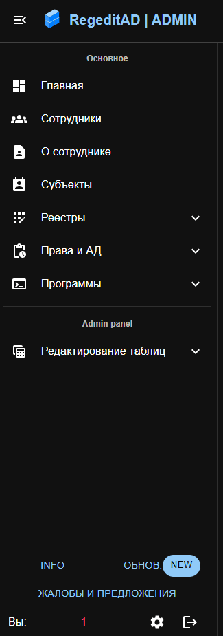
· На страницу "Информации о сотруднике", добавлено диалоговое окно выбора периода даты и столбца, по которому необходимо фильтровать данные перед загрузкой Excel файла;
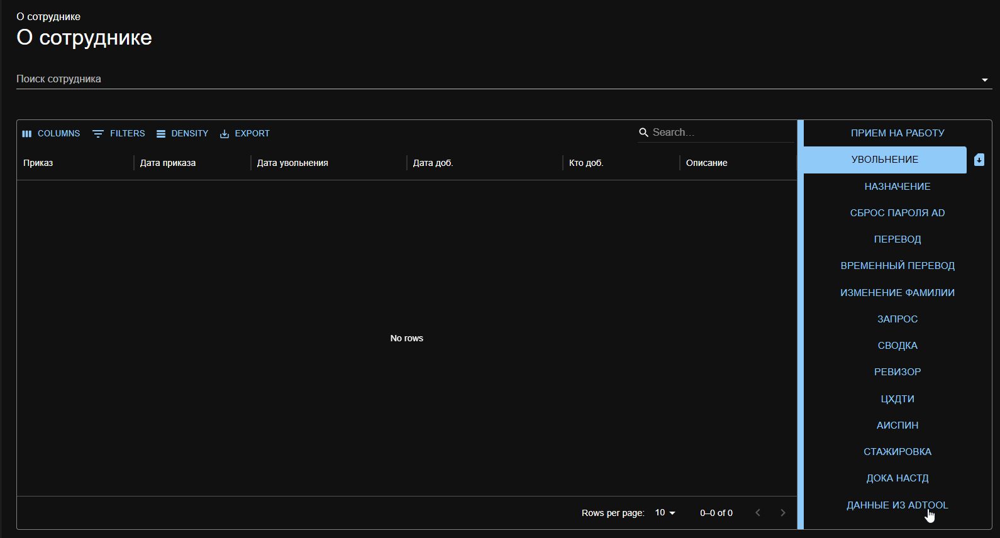
· Серьезно переработана страница Субъектов (оптимизация). Добавлен индикатор загрузки данных при открытии окна редактирования Контракт. Компании теперь занимают всю нижнею полосу страницы;
· Добавлена настройка количества отображения строк по умолчанию на странице ДокаНАСТД;
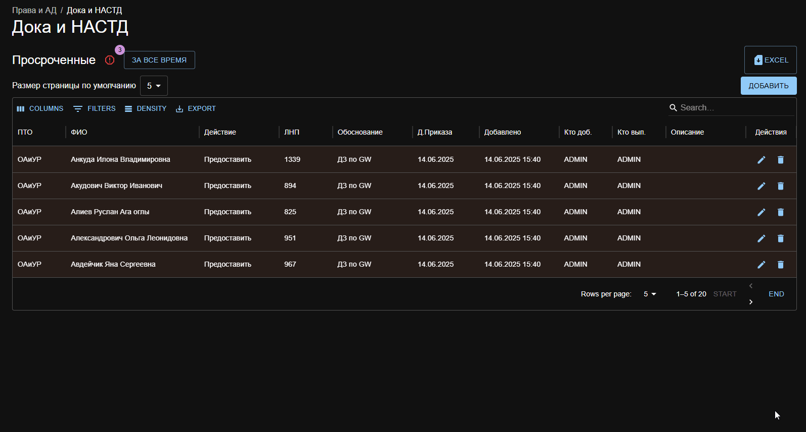
· Скорректированы цвета в светлой теме, и отображение в целом на странице данных ДокаНАСТД за все время;
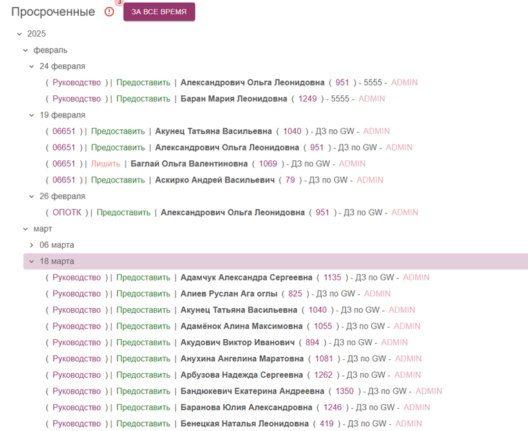
· По кнопке Info в нижней левой части теперь отображается актуальный список телефонов таможни (читается оригинальный вордовский файл);
· И еще ряд важных технический изменений.
Обновление от 26.05.2025-------------------------------------------------------------------------
Технические изменения:
· Настроена проверка токена на сервере, по истечении которого Клиента отключит от сервера (через 1 час) с оповещение об отключении. Предупреждение высвечивается за 5 минут до отключения;
· Токены теперь передаются только через куки и принимаются только через куки, Cors домены указываются обязательно;
· Оптимизированы компоненты авторизации;
Основные изменения:
· Добавлено: переход к странице увольнений через боковой компонент и сразу сортировка по выбранному сотруднику и его приказу. Отображение информации о том по кому сейчас отфильтрована таблица, кнопка очистки фильтрации;
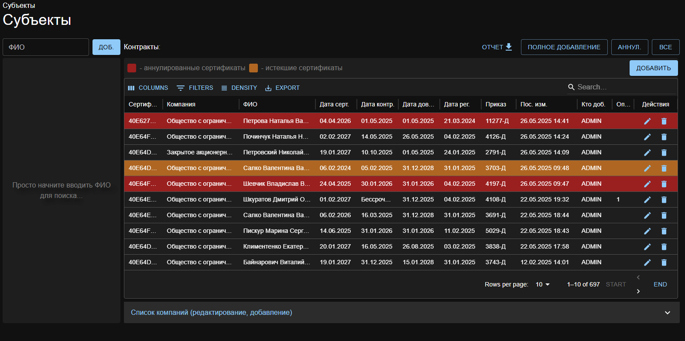
· Теперь список на блокировку после увольнения (боковое меню), указывает на тех, у кого дата увольнения равна сегодняшней (ранее учитывалось и время добавления этой записи);
· На странице прав добавлен просмотр доступных прав Отделу. Также добавление новых и редактирование прав;
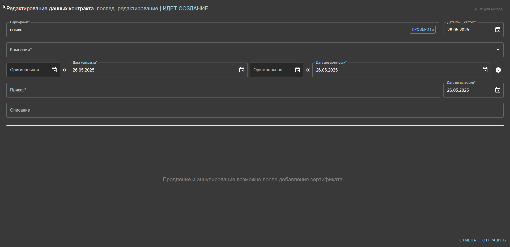
· По умолчанию при добавлении Продления в субъектах, в приказ вписывается "Эл. почта";
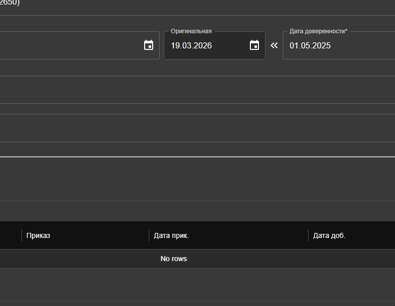
· В контракты субъектов добавлен новый параметр: оригинальные даты контракта и доверенности (пустые по умолчанию). Также кнопки-иконки (стрелочки), для того чтобы скопировать текущую дату в оригинальную;
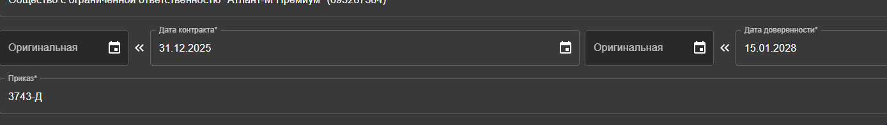
· Продление и аннулирование не отображается в окне Добавления контракта. Нельзя открыть окно Добавления контракта, если не выбран человек, которому необходимо добавить;
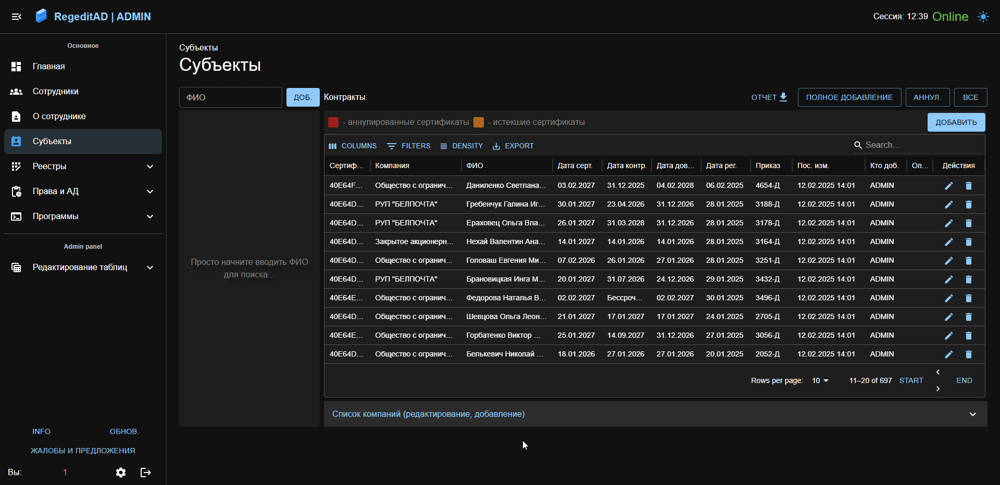
· Элементы больше не держат фокус (нет обводки, выделения) после клика на нее;
· Цвет текста интерактивных кнопок Светлой версии, сделан темнее, для лучшей читабельности. В остальных местах улучшено отображение для светлой темы;
· Перекрашены строки в Субъектах (более яркие). Добавлено отображение аннулированных сертификатов (контрактов). Добавлены информативные метки над таблицей о значении цвета;
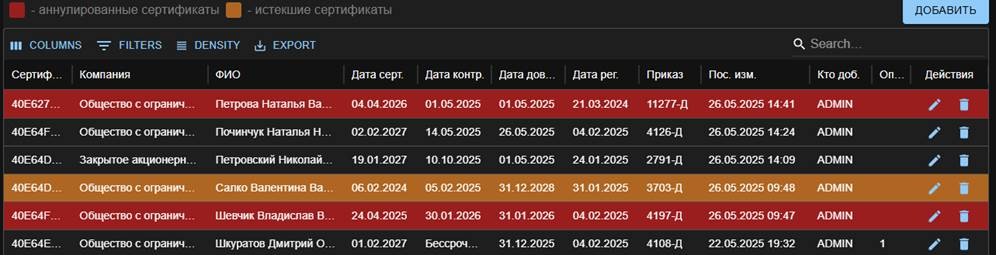
· Добавлена кнопка для получения списках только аннулированных сертификатов (состояние вкл.\выкл.). Работает также для отдельно выбранных сотрудников;
· Теперь для поиска людей во вкладке Субъектов, можно просто начать писать текст на странице не выделяю поле для ввода, и начнется поиск;

· Продления теперь сортируются по дате добавления (новые сверху);
· Добавлена кнопка проверки сертификата на дубликат при Добавлении нового Сертификата (также при редактировании);

· Теперь в файле Обновление присутствуют анимации Действий. Также можно открыть анимацию в отдельном окне Кликнув по ней;
Обновление от 25.04.2025-------------------------------------------------------------------------
· Изменены компоненты авторизации на клиенте и сервере (при первом запуске больше не надо дважды входить в программу) входит сразу и сразу показывается роль;
· Рефакторинг и легкая оптимизация на сервере «Роутов»;
· Индикатор загрузки на кнопке всех данных в модуле «Дока НАТСД»;
· Добавлен компонент отображения уволенных сотрудников, которых необходимо заблокировать в АД. Отображается на главном окне и в окне модуля «Увольнение»;
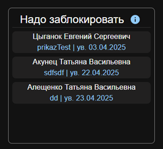
· Добавлен новый модуль «Запрос права Сотр.», где вносятся прав для определённых сотрудников программы Запрос. Сверху находится строка фильтрации по правам и их статусам. Есть 3 статуса: 0 право не выдано, 1 – выдано, 2 – спец. Право. Поиск производится путем ввода номера права, через запятую если несколько, также можно указать определенный статус через дефис: 1-2 (спец. право для 1-го), 2-1 (просто выдано без спец.), 4-0 (те у кого нет 4 права).
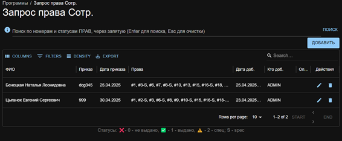
Обновление от 15.04.2025-------------------------------------------------------------------------
ПОЗДРАВЛЯЮ С ВЫХОДОМ ПРОГРАММЫ В РЕЛИЗ ИЗ БЕТТА-ВЕРСИИ
(все задуманные изначально основные модули добавлены и работают, дальше путь улучшения и развития)
· Добавлен большой модуль всей информации о выбранном сотруднике «О сотруднике», см. рисунок. Вверху в выпадающем списке выбирается сотрудник, о котором необходимо просмотреть информацию. После ниже появляется часть информации в текстовом виде: ФИО, логин, лнп (номер либо «нет»), отдел, текущее его состояние, описание (если имеется). Дальше находится таблица с данными и список кнопок навигации по данным. При выборе таблицы нажав кнопку справа, отобразятся данные из этой таблица связанные только с этим сотрудником. Также справа от кнопки выбора таблицы появится иконка загрузки, по нажатию на которую, загрузится Excel файл с данными из этой таблицы (и так с каждой таблицей).
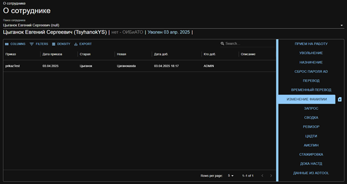
Также есть данные из ADTool, для них представлены отдельные кнопки для перехода между данными таблиц, см. рисунок. При выборе таблицы снизу также будет отображаться кнопка для загрузки ее в Excel с наименование выбранной таблицы для загрузки. Для перехода назад, кликнуть по «-назад-», либо кликнуть на другую таблицу.
· Добавлен реестр «Стажировка».
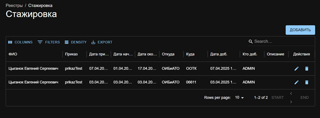
· Исправлен баг с отменой поиска субъекта, теперь корректно отменяется поиск субъектов, отображая все контракты;
Обновление от 18.03.2025-------------------------------------------------------------------------
· Добавлена возможность добавления сотрудника в «ДокаНАСТД», нажатием ENTER после его выбора в списке;
· На странице «ДокаНАСТД» добавлен функционал выгрузки записей в Excel. Записи можно выгружать за все время (выставить галочку, либо удалить даты из ячейки), за определенный промежуток (С и ПО), выбрать только дату С (С и до конца), выбрать только дату ПО (с начала и ПО). После нажатия на иконку загрузки, скачается файл с названием «DokaNASTD_Archive_сегодняшняя_дата». В названии листа файла будет помечен тот тип выгрузки что вы выбрали (С ПО, только С по конец, с начала и ПО):
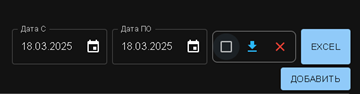
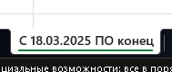
· Исправлен баг с изменением ширины столбцов в таблице «Субъектов» (часть таблицы больше не остается за пределами экрана);
· Отображения записи «Бессрочный» в ячейке с датой контракта или доверенности (если указана бессрочная дата 2999 г.):

Обновление от 17.03.2025-------------------------------------------------------------------------
· Добавлено - при формировании ежедневного отчета, в ячейке даты контракта или доверенности теперь отображается слово «Бессрочный» вместо даты с 2999 годом:

· Добавлена отметка о бессрочной дате в окне редактирования контракта:
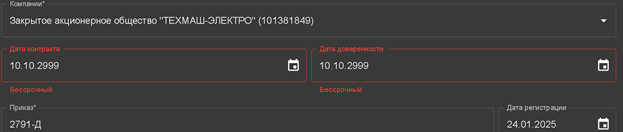
Обновление от 14.03.2025-------------------------------------------------------------------------
· Добавлены новые реестры «Программы» (Запрос, Сводка, Ревизор, ЦхдТИ, Аипсин)
· Обновлено - после добавлении сотрудника в правах «ДокаНАСТД», поле сотрудник автоматически очищается;
· Добавлен просмотр данных из «ADTool», вкладка «Данные из ADTool». Данный функционал, предоставляет таблицу архивированных (уже исполненных) записей, таблица по умолчанию обновляется раз в 12 часов. Также интервал обновления можно изменить, можно оставить функцию авто обновления, запустить и принудительно загрузить таблицу не дожидаюсь автоматического обновления. Интервал указывается в часах (1,2,3 можно 0.2,05 часа). Что применить новое время интервала, кликнуть по строке с вводом часов, справа появятся кнопки для сохранения либо отмены. Есть строка оповещения о последнем действии, также под ней указан текущий интервал обновления:
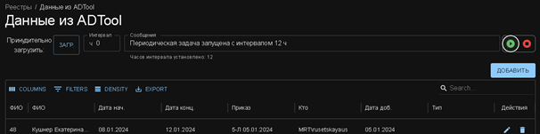
Обновление от 06.03.2025-------------------------------------------------------------------------
· Отображения ярлыка с кол-вом записей в таблице «Выдачи доступов», напротив навигационного меню, и в названии раздела:
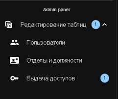
· Исправлено отображение списка данные «ЗА ВСЕ ВРЕМЯ» в разделе «ДокаНАСТД»:
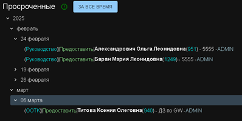
· Теперь при обновлении программы возле кнопки «ОБНОВ.» появляется надпись «NEW» (означающее что есть новое обновление), надпись пропадает при открытии окна с обновлениями:
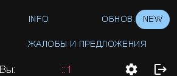
· Добавлен функционал для Администраторов по отключению выбранного пользователя из списка подключенных:
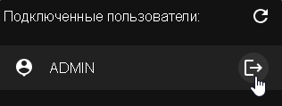
Обновление от 05.03.2025-------------------------------------------------------------------------
· Настройка на сервере удаления связанных данных. При удалении субъекта удаляются все связанные с ним контракты и продления, при удалении компании – веде, где она использовалась, запись заменится на «Удаленная компания». При удалении контракта – удаляются все его продления. Также при удалении сотрудника – удаляется вся связанная с ним информация (ДокаНАСТД, Прием, Сброс АД, Назначение, Перевод, Врем. Перевод, Фамилия, Увольнение);
· Обновление логирования сервера;
· Улучшение стабильности работы сервера;
· При добавлении записи в любую из таблиц, она сразу появляется в начале таблицы, а не в конце;
· Обновлены функциональные кнопки «Info», «ОБНОВ.» - теперь корректно отображают нужные данные;
· При добавлении Контракту - Продления, у контракта обновляется дата последнего изменения (на дату добавления продления);
· Добавлен новый функционал: просмотр всех данных «ДокаНАСТД» за все время, разделенные по годам – месяцам – датам. Функция доступна по кнопке «ЗА ВСЕ ВРЕМЯ» и является переключателем (по нажатию активируется и отображается писок, по повторному нажатию отключает отображение). Данные, в виде древовидного списка, см. рисунок:
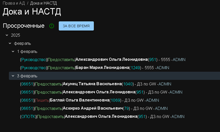
· Обновлен функционал поиска сотрудников в окне добавления прав «ДокаНАСТД», теперь поиск сотрудников можно осуществлять по их ЛНП, см. рисунок:
Обновление от 26.02.2025-------------------------------------------------------------------------
· Добавлен столбец «ФИО» на страницу Субъектов;
· Новые строки в таблицах отображаются в начале списка (по дате добавления записи);
· Во все таблицы добавлена кнопки «start» «end», для перехода в конец и начало списка соответственно;
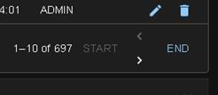
· Улучшены компоненты авто подстановки значений (сотрудник, отдел и т.д.), теперь при вводе значения если находится единственное уникальное, оно выбирается и прекращает дальнейший набор текста
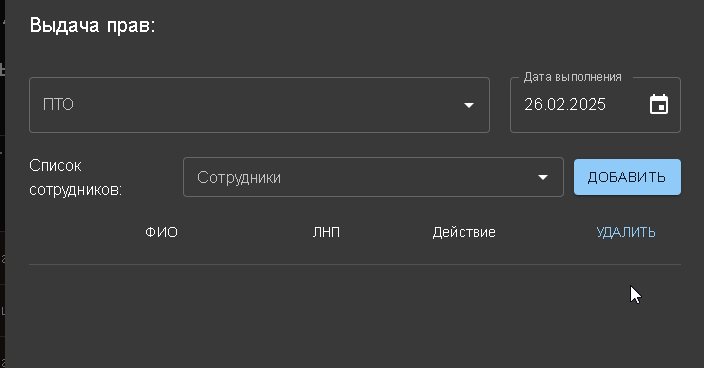
· Включена и корректно настроена фильтрация строк в «Дока и НАСТД», для «просроченных» строк. Теперь корректно отображается кол-во, при нажатия идет фильтрация таблицы для отображения только «просроченных» строк, кнопка является переключателем, значит повторное нажатие отменяет фильтрацию
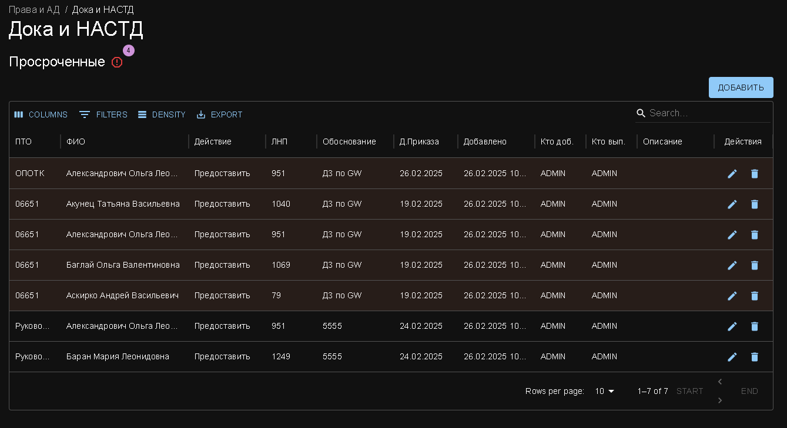
· На главном окне список подключенных теперь отображает имя пользователя, а не IP адрес;
· На странице «Жалобы и предложения» добавлено визуальное отображение статуса сообщения;
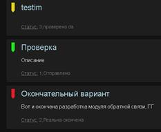
· В таблице «Дока и НАСТД» помеченные цветом записи (без обоснования), теперь выделяются при наведении.